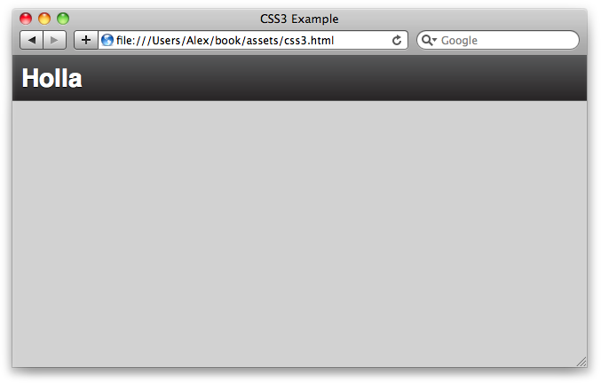
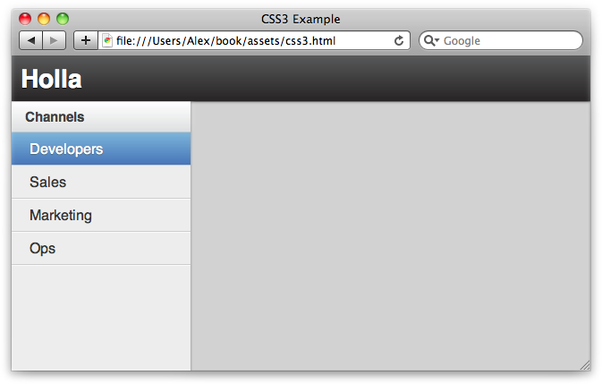

{% include JB/setup %}
{% raw %}
<div>
<div class="book" title="Creating a Layout"><div class="book"><div class="book"><div class="book"><h1 class="title1"><a id="I_sect1_d1e17300" class="calibre1"></a>Creating a Layout</h1></div></div></div><p class="calibre3"><a id="I_indexterm_d1e17304" class="calibre1"></a><a id="I_indexterm_d1e17309" class="calibre1"></a>Let’s take what we’ve learned and apply it to creating a
    simple layout, inspired by Holla.</p><p class="calibre3">First, let’s create the basic page markup. We’re going to have a
    header and two <span class="calibre1">columns—</span>a
    <code class="literal">sidebar</code> with fixed width and a <code class="literal">main</code>
    content container:</p><pre class="screen">&lt;body&gt;
  &lt;header id="title"&gt;
    &lt;h1&gt;Holla&lt;/h1&gt;
  &lt;/header&gt;

  &lt;div id="content"&gt;
    &lt;div class="sidebar"&gt;&lt;/div&gt;
    &lt;div class="main"&gt;&lt;/div&gt;
  &lt;/div&gt;
&lt;/body&gt;</pre><p class="calibre3">Next, let’s add the basic reset and body styles:</p><pre class="screen">body, html {
  margin: 0;
  padding: 0;
}

body {
  font-family: Helvetica, Arial, "MS Trebuchet", sans-serif;
  font-size: 16px;
  color: #363636;
  background: #D2D2D2;
  line-height: 1.2em;
}</pre><p class="calibre3">And now the <code class="literal">h</code> tags:</p><pre class="screen">h1, h2 {
  font-weight: bold;
  text-shadow: 0 1px 1px #ffffff;
}

h1 {
  font-size: 21pt;
  color: #404040;
}

h2 {
  font-size: 24pt;
  color: #404040;
  margin: 1em 0 0.7em 0;
}

h3 {
  font-size: 15px;
  color: #404040;
  text-shadow: 0 1px 1px #ffffff;
}</pre><p class="calibre3">Now let’s define a header for our layout. We’re using the CSS3
    background gradients, but we’re defaulting back to a plain hex code color
    if they’re not supported:</p><pre class="screen">#title {
  border-bottom: 1px solid #535353;
  overflow: hidden;
  height: 50px;
  line-height: 50px;

  background: #575859;
  background: -webkit-gradient(linear, left top, left bottom, 
  from(#575859), to(#272425));
  background: -webkit-linear-gradient(top, #575859, #272425);
  background: -moz-linear-gradient(top, #575859, #272425);
  background: linear-gradient(top, #575859, #272425);
}

#title h1 {
  color: #ffffff;
  text-shadow: 0 1px 1px #000000;
  margin: 0 10px;
}</pre><p class="calibre3">Now, if we look in the browser, there’s a dark header with our
    application’s name, as shown in <a class="ulink" href="apcs16.html#fig_c_1" title="Figure C-1. Our CSS application so far, displaying a header with a background gradient">Figure C-1</a>.</p><div class="book"><div class="figure"><a id="fig_c_1" class="calibre1"></a><div class="book"><div class="book"><a id="I_mediaobject_d1e17349" class="calibre1"></a></div></div><p class="title4">Figure C-1. Our CSS application so far, displaying a header with a background
      gradient</p></div></div><p class="calibre3">Let’s create a <code class="literal">#content</code> div that
    will contain the main part of the application. We want it stretched across
    the page in both the x and y directions, so we’ll make its position
    absolute. Its immediate children are aligned horizontally, so we’ll set
    its display to the flexible box type:</p><pre class="screen">#content {
  overflow: hidden;

  /* 
    The content div will cover the whole page,
    but leave enough room for the header.
  */
  position: absolute;
  left: 0;
  right: 0;
  top: 50px;
  bottom: 0;

  /* The children are horizontally aligned */
  display: -webkit-box;
  -webkit-box-orient: horizontal;
  -webkit-box-align: stretch;
  -webkit-box-pack: left;

  display: -moz-box;
  -moz-box-orient: horizontal;
  -moz-box-align: stretch;
  -moz-box-pack: left;
}</pre><p class="calibre3">Now let’s create a lefthand column called <code class="literal">.sidebar</code>. It’s got a fixed width, so we’re
    setting <code class="literal">box-flex</code> to 0:</p><pre class="screen">#content .sidebar {
  background: #EDEDED;
  width: 200px;

  /* It's got a fixed width, we don't want it to expand */
  -webkit-box-flex: 0;
  -moz-box-flex: 0;
  box-flex: 0;
}</pre><p class="calibre3">Let’s create a list of menu items inside <code class="literal">.sidebar</code>. Each menu is separated by an
    <span class="calibre1"><em class="calibre4">h3</em></span>, the menu header. As you can see, we’re using a
    lot of CSS3, which—due to the vendor prefixes—is rather repetitive. We can
    clean it up using Less mixins:</p><pre class="screen">#content .sidebar ul {
  margin: 0;
  padding: 0;
  list-style: none;
}

#content .sidebar ul li {
  display: block;
  padding: 10px 10px 7px 20px;
  border-bottom: 1px solid #cdcdcc;
  cursor: pointer;

  -moz-box-shadow: 0 1px 1px #fcfcfc;
  -webkit-box-shadow: 0 1px 1px #fcfcfc;
  box-shadow: 0 1px 1px #fcfcfc;
}

#content .sidebar ul li.active {
  color: #ffffff;
  text-shadow: 0 1px 1px #46677f;

  -webkit-box-shadow: none;
  -moz-box-shadow: none;

  background: #7bb5db;
  background: -webkit-gradient(linear, left top, left bottom, 
  from(#7bb5db), to(#4775b8));
  background: -webkit-linear-gradient(top, #7bb5db, #4775b8);
  background: -moz-linear-gradient(top, #7bb5db, #4775b8);
  background: linear-gradient(top, #7bb5db, #4775b8);
}</pre><p class="calibre3">Let’s add some example menus to the HTML markup:</p><pre class="screen">&lt;div class="sidebar"&gt;
  &lt;h3&gt;Channels&lt;/h3&gt;
  &lt;ul&gt;
    &lt;li class="active"&gt;Developers&lt;/li&gt;
    &lt;li&gt;Sales&lt;/li&gt;
    &lt;li&gt;Marketing&lt;/li&gt;
    &lt;li&gt;Ops&lt;/li&gt;
  &lt;/ul&gt;
&lt;/div&gt;</pre><p class="calibre3">All the CSS that’s left is the <code class="literal">.main</code> div, which stretches right across the
    page:</p><pre class="screen">#content .main {
  -moz-box-shadow: inset 0 1px 3px #7f7f7f;
  -webkit-box-shadow: inset 0 1px 3px #7f7f7f;
  box-shadow: inset 0 1px 3px #7f7f7f;

  /* We want .main to expand as far as possible */
  -webkit-box-flex: 1;
  -moz-box-flex: 1;
  box-flex: 1;
}</pre><p class="calibre3">Let’s take another look; as <a class="ulink" href="apcs16.html#fig_c_2" title="Figure C-2. Basic application layout">Figure C-2</a> shows, we’ve
    now got a basic application layout upon which we can expand.</p><div class="book"><div class="figure"><a id="fig_c_2" class="calibre1"></a><div class="book"><div class="book"><a id="I_mediaobject_d1e17401" class="calibre1"></a></div></div><p class="title4">Figure C-2. Basic application layout</p></div></div><p class="calibre3">As I mentioned before, the CSS3 syntax is rather verbose and
    repetitive due to the vendor prefixes we have to use. We can clean it up
    using Less mixins. For example:</p><pre class="screen">#content .sidebar h3 {
  .vbg-gradient(#FFF, #DEDFE0);  
  .box-shadow(0, -5px, 10px, #E4E4E4);
}</pre><p class="calibre3">See <a class="ulink" href="apb.html" title="Appendix B. CSS Extensions">Appendix B</a> for more
    information, and view the Holla stylesheets for some good
    examples.<a id="I_indexterm_d1e17414" class="calibre1"></a><a id="I_indexterm_d1e17415" class="calibre1"></a></p></div></div>

{% endraw %}

